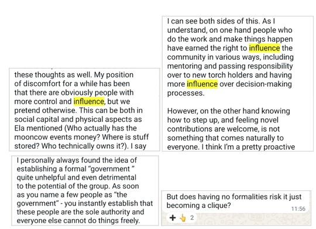
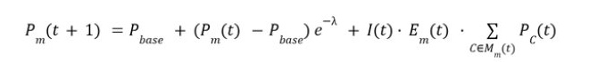
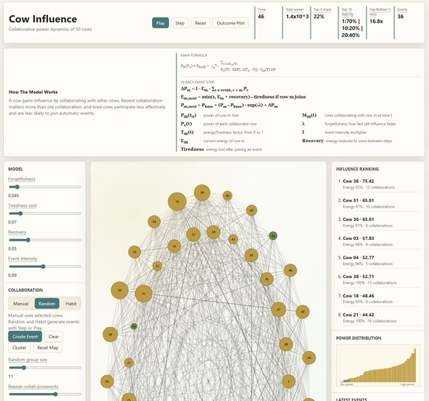
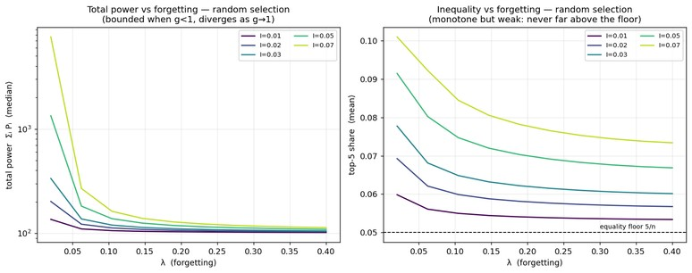
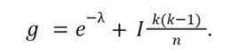
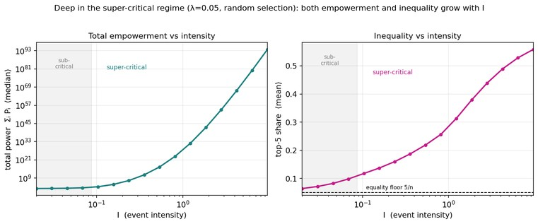
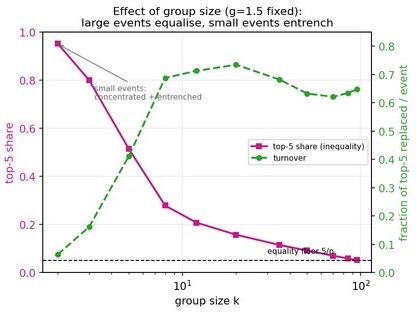
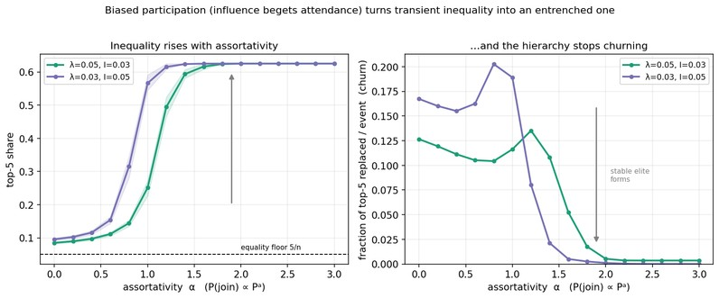
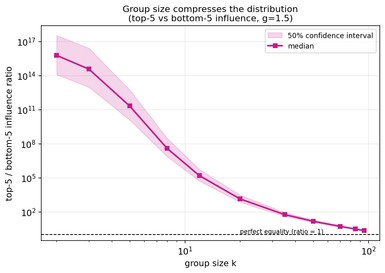

MOOWS / Issue 01 · August 2026
On power and inequality within do-ocracies
We propose to study the power dynamics in non-hierarchical organizations such as the MoonCows. Indeed, while such organizations are nominally egalitarian, their group dynamics can lead to power imbalances. In fact, the possibility of such imbalances has been highlighted in various community discussions (see Figure 1).

We note that the heart of the discussion pertains to whether there is a mismatch between the group structure and resulting group dynamic. In this work we therefore ask: under what conditions can egalitarian group structures yield implicit or explicit power imbalances, and how does this relate to the community’s empowerment?
Models of Cow governance
To operationalize this question, we survey existing frameworks for describing non-hierarchical forms of governance. Of these, some appear unfit for the purpose of the study:
- rule-based: while MoonCows indeed have governing principles e.g. around consent, most decision making (e.g. whether to organize a rave and when) falls out of their scope
- democracy: while MoonCows love discussing ideas, decisions are rarely decided through voting
We therefore limit our study to the following models, which provide good coverage of the features of interest:
Do-ocracy: Task-doers gain local decision rights by initiative
- Meritocracy or aristocracy: Influence is weighted by past contribution, competence, or prestige
- Anarchy or self-governance: No standing central authority: order emerges through norms and repeated interaction
The CowSimulator
We note that these models share the feature that an individual’s influence is proportional to their engagement in past and present group activities. We study the group dynamics driven by this feature with a simple quantitative model, the CowSimulator. We consider a group of n = 100 individuals hereafter referred to as “Cows”, each with an influence Pₘ , as well as other features such as energy and fatigue.
Influence evolves through events: given an event at time t, each participating Cow’s influence Pₘ is incremented in proportion to the total influence of its collaborators, the Cow’s own available energy Eₘ(t) and the event’s intensity I(t).
At the same time, Cows forget past contributions at a rate λ . Together,

where the final (gain) term is present only for Cows participating in the event. In addition, we model the energy levels of each cow Eₘ(t) which decrements when participating in an event but otherwise recovers.
We initially assume that Cows decide when to participate according to a uniform random process, and later model non-uniform participation dynamics. We monitor the properties of the group by tracking two aggregate quantities: the total influence of the entire group, and the evenness of its distribution via the share of influence held by the top 5% most influential Cows.
Below, we present some of our findings. Due to space constraints, we cannot discuss every aspect of the simulation.
However, we invite our readers to explore the CowSimulator by following this LINK.

Sleepy, forgetful Cows: an egalitarian regime
To gain intuition for the CowSimulator we vary the intensity of events I and the forgetfulness λ . Figure 3 (left) shows them to have compounding effects: high-intensity events (such as rave parties) lead to high total empowerment, and low levels of forgetfulness ensures the accumulation of that empowerment over time. We note, however, a secondary effect (Figure 3, right): both of these increase the inequality in power distribution, even though the groups remain overall largely egalitarian (top-5 share remains <10%).

Intensity and forgetfulness together can be combined in a new parameter, the empowerment growth factor (EGF) which multiplies the group's total influence at every turn:

EGF balances the rate at which old influence fades against the rate at which events inject new influence (intensity I, event size k, size of the community n). The sleepy, egalitarian regime of the beginning of this section lives in the sub-critical regime, g < 1. Experimentally (see, for example, this magazine), we know that MoonCows lean towards high-intensity events and aspire to higher total empowerment. We, therefore, next explore g > 1, the super-critical regime of high-intensity events typical of Cows.
Transient inequality deep in the super-critical regime
We push the CowSimulator into the super-critical regime by increasing the intensity of events (such as Nowhere, MoonCow Festival, or forest raves). Consistently with the EGF theory and our previous empirical findings, the total influence of the group grows dramatically, as does its inequality (Figure 4).

While this regime indeed presents high-levels of inequality at any point in time, we nevertheless ask whether the same Cows are always in positions of power (entrenched inequality), or whether power circulates from one Cow to another (transient inequality). To that end we compute the influence turnover, the fraction of the five most influential Cows that is replaced from one event to the next (the higher this number the faster the top cows swap). We measure the influence turnover holding the EGF fixed and varying the event size k.
We see in Figure 5, that during the small events (k < 10) the top-5 share increases (pink curve) while the turnover collapses (green curve). This configuration concentrates influence onto the one or two Cows fortunate enough to attend those small events, and, crucially, entrenches their influence. Those lucky cows who participate in several very intense events (g = 1.5) grow their personal influence almost exponentially, leaving other cows behind, yielding high levels of entrenched inequality.

At the same time, looking at larger events (k > 10), we find them to be a powerful equaliser: the top-5 share falls monotonically down to the egalitarian floor for plenary events, where every Cow receives an identical boost and symmetry is restored exactly. Recall that a Cow's influence gain is proportional to the influence of its collaborators, not its own; upon convening, a powerful Cow therefore empowers all its randomly-chosen partners. At the same time, the turnover rises with participation and saturates near 70%. This means that in the situations of inequality (for k between 10 and 90), this inequality is transient.
In conclusion, large, inclusive events make inequality transient; small, exclusive ones produce inequality that is both severe and durable.
Becoming a clique
Given the central importance of participation in determining whether influence is shared across Cows and over time, we now consider a variant of the CowSimulator with assortativity, i.e. where Cows participate in events non-uniformly, and in proportion to their existing influence: P(join) = Pᵅ, where α = 0 reverts to the previously uniform participation process. As α increases, influential Cows participate in events more often than less influential ones, and inequality rises sharply (Figure 6, left). More alarmingly, influence turnover also collapses (Figure 6, right), indicating that with high levels of assortativity, previously observed transient inequality now becomes an entrenched hierarchy. This confirms broad, unbiased participation to be an essential component for maintaining egalitarian groups structures.

Disempowerment of the weakest
In the previous sections, we use a certain inequality metric, top-5 share, that some might argue is not representing inequality fully, because it misses the bottom-5 cows. We therefore examine another metric, a fraction of top-5 cow power to bottom-5 cow power and plot this metric as a function of group size k in the super-critical regime (similar to Figure 5). We point out that in the entrenched inequality state (top left of Figure 7), this ratio is extraordinarily high: the power of the strongest cows is 100,000,000,000,000,000 times larger than the power of the weakest cows. This astonishing number indicates total disempowerment of the weakest cows, likely leading to group fission and a quick departure of those disenfranchised cows.

Still, it should be noted that even in the more equal and transient regime with k between 10 and 50, the top-5/bottom-5 ratio falls between 10,000 and 10. A full participation (k = n) trivially leads to top-5/bottom-5 being 1 - a fully equal state, which is physically almost never possible. Even though full equality is often desired, it is only natural that some more active cows will indeed have more influence, and sometimes the difference between five cows who organised an awesome forest rave and those cows who danced at another one a year ago can indeed be in hundreds.
Discussion: what is to be done?
In summary, motivated by discussions from the community, we investigated the conditions under which egalitarian group structures can yield power imbalances, or instead stay egalitarian. As part of our investigation, we uncovered three regimes:
- Perfect equality, which required low intensity events and/or quickly forgetting past contributions. Both of these interventions however came at the cost of the empowerment of the community.
- Transient inequality* where power imbalances exist in snapshots of the community, but change over time, with influential Cows using their influence to empower new Cows.
- Entrenched inequality where unequal participation (due to small, exclusive events or biases in the tendency to join larger ones) consolidate the influence of powerful Cows into more rigid hierarchies.
In particular, our analysis adds nuance to the notion of inequality, highlighting the difference between entrenched and transient inequality. We hope this analysis alleviates some uneasiness around feelings of inequality, and sharpens our understanding of its dynamics with a view on empowering individuals and the community.
Indeed, the CowSimulator uncovers the modalities of participation as a driving factor in determining whether power changes hooves or remains static. Given this, we recommend the following approaches for avoiding potential Cow oligarchies:
- Transparency. For example, organizing forest raves has increasingly involved broad calls for participation to DJ, polls for deciding on the date, etc. Similarly, open-invitation MC socials allow Cows to voice their concerns and make decisions in larger groups.
- Diversity in the types of events so that more people can engage with the community in a myriad of different ways. Indeed, Cows not only enjoy raves, but also art, theatre, tennis, oysters, churches, etc.
- Dynamic collaborations. Even though older cows have expertise and trust of the Cowmunity, they need to constantly bring new Cows to collaborate on important events and create the environment for new Cows to show themselves. This has been happening in the Mooncow barrio since its inception - each year we have a new lead who brings their own inexperience and their own character into the larger group.
Crucially, these levers avoid the equality-empowerment tradeoff of the “Perfect Equality” regime: rather than dimming events to keep the peace, they let the Cowmunity stay vibrant and egalitarian by keeping participation broad and collaborations in constant rotation.
Non-rule-based initially-egalitarian anarchic do-ocracies are a beautifully ambitious experiment. To continue building vibrant events while remaining structurally equal (or dynamically unequal?) and continuing to grow while upholding a high trust environment and empowering its members, we leave the Cowmunity with the following mantra:
Be aware of the CowSimulator. Know thyself.